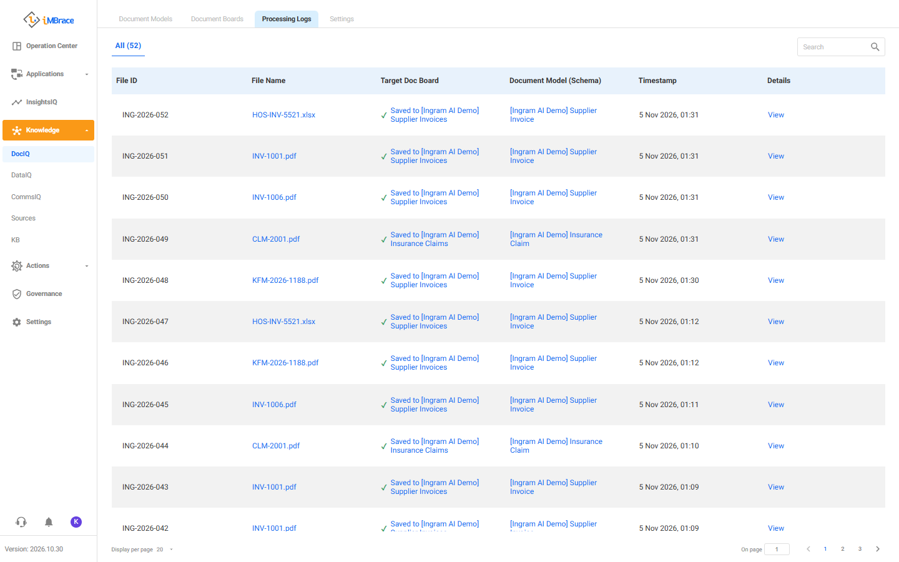
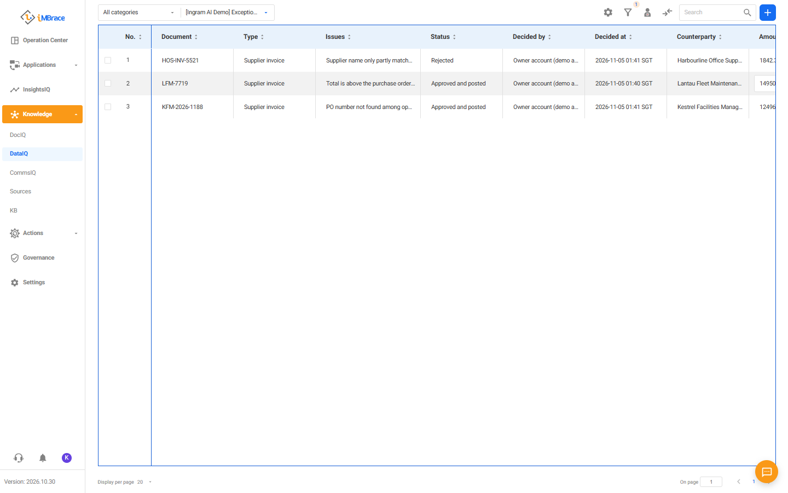
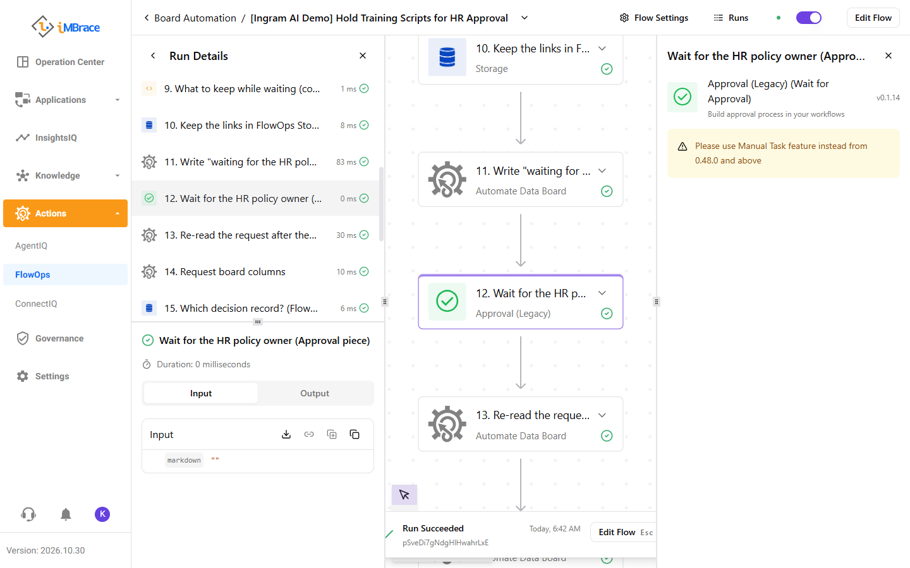

Chapter · Operating view
Follow the work from document to decision.
FlowOps shows workflow steps. DataIQ, iMBrace’s records boards, shows the work queue. DocIQ shows document processing. Choose the screen that answers your team’s question.
For: process owners, service managers, knowledge owners and AI operations teams.
Choose the view
Match the question to the screen.
| Your question | Open this screen | Useful for | Watch an example |
|---|---|---|---|
| Which steps did the workflow take? | FlowOps > Runs: the step sequence and a paused or resumed workflow | Process teams and builders | Draft an HR reply |
| What needs the team's attention? | DataIQ boards: queues, decisions and results as records | Business teams and managers | Check incoming invoices |
| Where did this document go? | DocIQ > Processing Logs: the file, document model and destination board | Document operations | Follow a document into a record |
| How did the assistant answer? | InsightsIQ: the chat, skill cards and chart panel | People asking questions and their managers | Ask about sales and margin |
| Which sources can the assistant use? | Knowledge: the document library and its tags | HR and IT knowledge teams | Find a version-specific fix |
| Which chat did this visitor use? | Contacts: the visitor record linked to web chat | Customer-care teams | Answer a customer in chat |
The examples use fictional companies, customers and documents.
Follow the work
Open the record behind the result.






Supporting detail